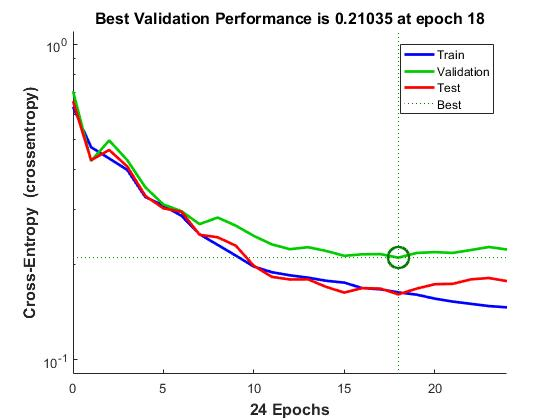
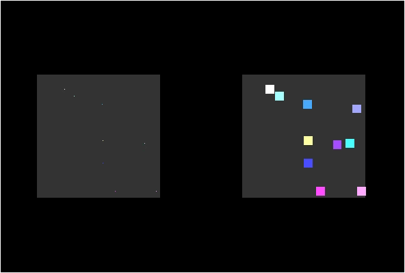
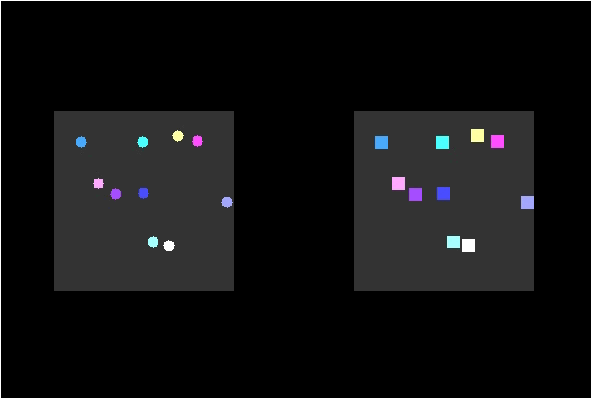
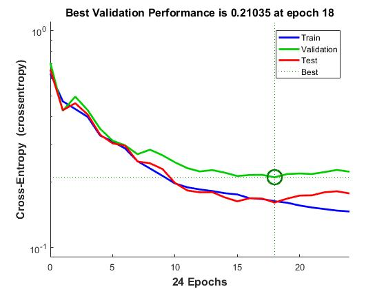
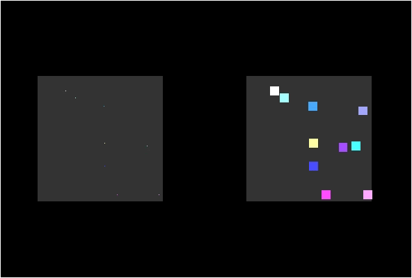
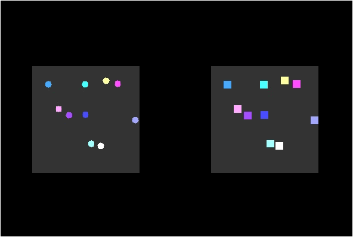

- MARIO AI
-
UCLA, CS 188: AI Playing Games (Spring 2016)
Super Mario is a solved problem. Any number of autonomous
agents can play the game well. For us, Super Mario was a
platform from which we could ask questions not of performance,
but of logic: what are the rules of behavior that fix within the
“black box” of neural networks? and what methods can we use to
distill these rules?
Our answer was a synthesis of distributed and sequential logic.
We convened a data set of 100,000 snapshots of player and
environment state. This data was culled from the recorded gameplay
of a neural network agent and was fed into a self-organizing map.
The map clustered snapshots about a two-dimensional plane,
reducing input dimensionality. Labeled by hand, the resultant
clusters were taken to be symbolic of a set of prototypical game
states a player might encounter. They determined the input to our
state-action table.
A state-action table expresses the expected value of an action in
response to a given state. As coded in our table, such expectations
were informed by reinforcement learning. Unlike orthodox
reinforcement learning, our conditioning was not by direct agency,
but by observation of a neural network agent. Our actions were
symbolic of the set of all coherent combinations of key presses on
the game controller.
By its nature, a fixed state-action table may be reduced to a series
of conditional statements: “if state then action.” We worked to
make our state-action table into an accurate simulation of the neural
network. If we were successful, we could by transitivity approximate the
“program” fixed within the neural network as a series of conditional
statements.
-
We found that we could not adequately simulate the behavior of a neural
network.
The strategies which manifested in our agent were fairly crude: our
Mario leapt in the presence of Goombas, waited for Piranha Plants to
disappear from view. These tactics were aspects of the neural network’s
behavior, assuredly; however, they were oversimplifications. Our agent’s
shortcomings were due to a lack of state granularity and a naivety to
long-term rewards.
By operating on state classes, our agent was desensitized to possible
interactions between features within a state class. The neural network
remained mindful of such interactions by operating on state features
directly. Our agent, as a result, could not identify exceptional states
or subclasses as known to the neural network: reinforcement learning
worked in futility toward the representation of multiple strategies
within the space of a single strategy. Discriminable states were poorly
convoluted within single state classes.
Our agent’s behavior indicated no understanding of the long-term value
of progress. Loitering was a recurring tactic, as idleness guaranteed
Mario’s score and well-being. This tendency toward stability was an
impediment to the ultimate goal of stage completion. We attempted to solve this issue by the addition of a motion heuristic:
“always consider forward motion to be more valuable than idleness.” This
adjustment was only moderately useful. Our agent often protested by
driving itself into walls, standing still in effect.
In pursuit of a more representative set of state classes, we recommend feature
selection and hierarchical clustering. In pursuit of goal-oriented
behavior, we recommend some prediction schema: such a mechanism would
determine a present action not only by its expected value, but also by
the expected value of subsequent actions in predicted future states.
Our self-organizing map was sourced from the
Java-ML library.
Our agent
was built upon the Java codebase provided by
Mario AI Championship 2012.
Our code is available on
GitHub.
An introductory presentation I have prepared on reinforcement learning
and neural networks can be found
here.
- GENRE CLASSIFICATION
-
UCLA, Psych 186C: Neural Networks (Winter 2016)
Streaming services dominate audio entertainment. With massive libraries at their command,
subscribers often rely on automated suggestion to navigate unexplored content. The
task of directing users to content which consistently engages them relies on an
understanding of how the audience classifies said content. We applied machine
learning to this endeavor, invoking both supervised and unsupervised learning
techniques.
The data point for each song was a 1400-element vector. Many of these elements were culled
from Fourier and chroma transforms of the song waveform. Features such as tempo,
duration, loudness, key, and mode were appended to this transform data.
We programmed a self-organizing map (SOM) in MATLAB to explore the potential of
unsupervised learning in genre classification. Unlike a supervised learning algorithm, an SOM is never trained
on labelled data.


-
A set of 100 RGB color vectors were fed into our SOM to test the program. Note how,
in the figures above, the color vectors congregated into distinct groups, groups of
similar color placed adjacent to one another. This is the function of an SOM: to cluster
inputs based on their features alone. Our SOM was functioning properly.
Color is represented as a 3-element vector and translates naturally to color on screen,
but a self-organizing map may handle n-element vectors. Having tested our program on the
color sample, we fed our music corpus into the SOM.


-
The figures above are one 4-genre mapping and two 2-genre mappings. The first two mappings
used unnormalized features; the last mapping used within-element Z-scores as features. Unlike the color
example, clusters were not clearly visible without labeling. Using human-rated labels, data points were colorized
so that data points of the same color belonged to the same ground-truth genre.
Upon visual inspection, the mappings attest to the moderate "clusterability" of the input features: although
spatial boundaries were not evident between groups, songs of the same genre tended to congregate.
Due to the lack of spatial boundaries, groups could not be drawn fairly. As such, we could not
objectively evaluate the purity of groups. We made an exception for our third mapping. In it, songs had
apparently polarized along an equator. Drawing a hyperplane at y = 20 to define top and bottom groups, we found the
purity of the mapping to be 77.5%.
We turned our investigation to supervised learning algorithms, examining a feedforward neural network tuned by
backpropagation.
Genres are purely interpretive. Classifications as arbitrary as relaxed, maximalist, and
warm are all valid genres. Genres are simply abstract classes: so long as they may be distinguished
by patterns that manifest in their musical features, we can use any set of labels to understand them.
This is the power of a supervised approach: a user assigns labels and the neural network learns
what patterns distinguish label members.
- 
-
We found that our feedforward neural network, exposed to the same 2-genre corpus as our third
mapping, classified songs with similar performance. At
its maximum cross-validation performance (used to prevent
overfitting), the neural network delivered an accuracy of 82%.
Genre classification is a highly subjective task. An SOM may provide feature-driven
genre definitions, but these definitions do not necessarily correspond
to the genres that musical culture has produced. For this
reason, we recommend the use of supervised learning techniques for
the purpose of user-oriented genre classifications.
Our data was sourced from the Lab ROSA Million Song Database.
Our presentation may be found here.
- TRAVELING SALESMAN
-
Personal project (Fall 2016 - present)
We have an understanding of distributed computation that regards objects
in aggregate as substances: annealing and coarsening, terms from
metallurgy, are as relevant to abstract neural networks as they are to
physical materials. The state of such a substance may be defined as
the combination of the states of its constituent objects. Each
constituent state provides a coordinate: the coordinates together
describe the overall substance state as a position in a
high-dimensional error landscape.
On the error landscape, altitude is a measure of correctness and
a function of position. In optimization problems, we would like
to transform our substance so that its position corresponds to
some minimum or maximum altitude. Algorithms which conduct such
transformations typically trade complexity with accuracy.
Gradient descent, for example, is rapid but greedy; a Boltzmann
machine, by contrast, is slow but absolute.
Our knowledge of the bounds of computational complexity and of
methods in nonlinear machine learning stand much to gain from an
understanding of the connectivity between points in an error
landscape and how a substance may traverse that space. I’m
fascinated by this relationship between computability and topology.
With this project, I investigate methods of traversal that are not
contingent upon error minimization. The NP-hard traveling salesman
problem (TSP) provided an excellent platform for this investigation.
Equating cities to objects and their connectivity to a substance, I
ask: is it possible for a substance to reach the optimal state by the
naive interaction of sovereign objects?
Molecular bonding was a particular source of inspiration: atomic particles
organize into meaningful structure on the basis of individual
interactions.
- 
-
The circle inscribed by any combination of three cities has a center
that is equidistant from each of the cities. This radius, relative to
the distance between the cities, proved useful in determining the optimal path
between them.
Computing this circle for every combination of three cities would require at least
N-choose-3 operations, lending factorial complexity to the process;
however, not all cities interact. Many of these circles would be
superfluous as the cities within them would never be linked in an
optimal solution.
I warped the gameboard to be a flat torus and had cities “radiate”
across the map. City spans that collided attempted to bond with one
another. I found this to be an adequate approximation of the
aforementioned circle-finding functionality, foregoing the superfluous
circles and reducing the complexity to a polynomial of the number of
cities and grid cells. The accuracy of this heuristic was contingent
upon the grid cell density, such that an infinitely dense grid would
give perfect accuracy.
In the animation above, the cities bond to form a single cycle as their
spans collide with one another. Paths that extend beyond the grid
boundaries resume from the opposite end inwards.
- 
-
Here we observe more complex bonding behavior, wherein pre-existing
bonds are broken to allow for new ones.
These breaks are determined by local behaviors of the city objects,
with complete naivety to the overall cycle length. They occur when
an unlinked or singly-linked city encounters a doubly-linked city
(a “joint”). If the joint is linked to a city (a “limb”) that
neighbors another unlinked or singly-linked city, the joint and
limb will break their bond and link to their respective
incompletely-linked neighbors. Ideally, from these naive bonding
rules, an optimal cycle will emerge.
In the animation above, a bug reveals itself: the naive bonding rules
result in two separate cycles. TSP demands a single cycle containing every city.
Can distributed computation provide some method for transforming
an NP problem into a P problem? My intuition is no. But I explore
the possibility by experimenting with modifications to TSP and
determining if such transformations are game-breaking, or lend
power to the distributed method.
Track my progress on GitHub.
- MOTION OPPONENCY
- Work at UCLA in computational perception. More soon.
- Check out the manuscript.
- RHYTHM SENSITIVITY
- Work at UCI in musical cognition. More soon.
- See a replica of the experiment.
- BOUNDARY EXTENSION
- Work at UCLA in computational perception. More soon.
- Check out our poster.
- RUBIK'S CYCLE
- An examination of the flexibility of mental representations. More soon.
- ANALOGIES
- An album written and performed by yours truly.
- Available for download.
- Featured in SUSPEND Magazine.
-
UCLA, CS 188: AI Playing Games (Spring 2016)
Super Mario is a solved problem. Any number of autonomous agents can play the game well. For us, Super Mario was a platform from which we could ask questions not of performance, but of logic: what are the rules of behavior that fix within the “black box” of neural networks? and what methods can we use to distill these rules?
Our answer was a synthesis of distributed and sequential logic.
We convened a data set of 100,000 snapshots of player and environment state. This data was culled from the recorded gameplay of a neural network agent and was fed into a self-organizing map. The map clustered snapshots about a two-dimensional plane, reducing input dimensionality. Labeled by hand, the resultant clusters were taken to be symbolic of a set of prototypical game states a player might encounter. They determined the input to our state-action table.
A state-action table expresses the expected value of an action in response to a given state. As coded in our table, such expectations were informed by reinforcement learning. Unlike orthodox reinforcement learning, our conditioning was not by direct agency, but by observation of a neural network agent. Our actions were symbolic of the set of all coherent combinations of key presses on the game controller.
By its nature, a fixed state-action table may be reduced to a series of conditional statements: “if state then action.” We worked to make our state-action table into an accurate simulation of the neural network. If we were successful, we could by transitivity approximate the “program” fixed within the neural network as a series of conditional statements.
-
We found that we could not adequately simulate the behavior of a neural network.
The strategies which manifested in our agent were fairly crude: our Mario leapt in the presence of Goombas, waited for Piranha Plants to disappear from view. These tactics were aspects of the neural network’s behavior, assuredly; however, they were oversimplifications. Our agent’s shortcomings were due to a lack of state granularity and a naivety to long-term rewards.
By operating on state classes, our agent was desensitized to possible interactions between features within a state class. The neural network remained mindful of such interactions by operating on state features directly. Our agent, as a result, could not identify exceptional states or subclasses as known to the neural network: reinforcement learning worked in futility toward the representation of multiple strategies within the space of a single strategy. Discriminable states were poorly convoluted within single state classes.
Our agent’s behavior indicated no understanding of the long-term value of progress. Loitering was a recurring tactic, as idleness guaranteed Mario’s score and well-being. This tendency toward stability was an impediment to the ultimate goal of stage completion. We attempted to solve this issue by the addition of a motion heuristic: “always consider forward motion to be more valuable than idleness.” This adjustment was only moderately useful. Our agent often protested by driving itself into walls, standing still in effect.
In pursuit of a more representative set of state classes, we recommend feature selection and hierarchical clustering. In pursuit of goal-oriented behavior, we recommend some prediction schema: such a mechanism would determine a present action not only by its expected value, but also by the expected value of subsequent actions in predicted future states.
Our self-organizing map was sourced from the Java-ML library. Our agent was built upon the Java codebase provided by Mario AI Championship 2012. Our code is available on GitHub. An introductory presentation I have prepared on reinforcement learning and neural networks can be found here.
-
UCLA, Psych 186C: Neural Networks (Winter 2016)
Streaming services dominate audio entertainment. With massive libraries at their command, subscribers often rely on automated suggestion to navigate unexplored content. The task of directing users to content which consistently engages them relies on an understanding of how the audience classifies said content. We applied machine learning to this endeavor, invoking both supervised and unsupervised learning techniques.
The data point for each song was a 1400-element vector. Many of these elements were culled from Fourier and chroma transforms of the song waveform. Features such as tempo, duration, loudness, key, and mode were appended to this transform data.
We programmed a self-organizing map (SOM) in MATLAB to explore the potential of unsupervised learning in genre classification. Unlike a supervised learning algorithm, an SOM is never trained on labelled data.
-
A set of 100 RGB color vectors were fed into our SOM to test the program. Note how, in the figures above, the color vectors congregated into distinct groups, groups of similar color placed adjacent to one another. This is the function of an SOM: to cluster inputs based on their features alone. Our SOM was functioning properly.
Color is represented as a 3-element vector and translates naturally to color on screen, but a self-organizing map may handle n-element vectors. Having tested our program on the color sample, we fed our music corpus into the SOM.
-
The figures above are one 4-genre mapping and two 2-genre mappings. The first two mappings used unnormalized features; the last mapping used within-element Z-scores as features. Unlike the color example, clusters were not clearly visible without labeling. Using human-rated labels, data points were colorized so that data points of the same color belonged to the same ground-truth genre.
Upon visual inspection, the mappings attest to the moderate "clusterability" of the input features: although spatial boundaries were not evident between groups, songs of the same genre tended to congregate.
Due to the lack of spatial boundaries, groups could not be drawn fairly. As such, we could not objectively evaluate the purity of groups. We made an exception for our third mapping. In it, songs had apparently polarized along an equator. Drawing a hyperplane at y = 20 to define top and bottom groups, we found the purity of the mapping to be 77.5%.
We turned our investigation to supervised learning algorithms, examining a feedforward neural network tuned by backpropagation.
Genres are purely interpretive. Classifications as arbitrary as relaxed, maximalist, and warm are all valid genres. Genres are simply abstract classes: so long as they may be distinguished by patterns that manifest in their musical features, we can use any set of labels to understand them. This is the power of a supervised approach: a user assigns labels and the neural network learns what patterns distinguish label members.
- 
-
We found that our feedforward neural network, exposed to the same 2-genre corpus as our third mapping, classified songs with similar performance. At its maximum cross-validation performance (used to prevent overfitting), the neural network delivered an accuracy of 82%.
Genre classification is a highly subjective task. An SOM may provide feature-driven genre definitions, but these definitions do not necessarily correspond to the genres that musical culture has produced. For this reason, we recommend the use of supervised learning techniques for the purpose of user-oriented genre classifications.
Our data was sourced from the Lab ROSA Million Song Database. Our presentation may be found here.
-
Personal project (Fall 2016 - present)
We have an understanding of distributed computation that regards objects in aggregate as substances: annealing and coarsening, terms from metallurgy, are as relevant to abstract neural networks as they are to physical materials. The state of such a substance may be defined as the combination of the states of its constituent objects. Each constituent state provides a coordinate: the coordinates together describe the overall substance state as a position in a high-dimensional error landscape.
On the error landscape, altitude is a measure of correctness and a function of position. In optimization problems, we would like to transform our substance so that its position corresponds to some minimum or maximum altitude. Algorithms which conduct such transformations typically trade complexity with accuracy. Gradient descent, for example, is rapid but greedy; a Boltzmann machine, by contrast, is slow but absolute.
Our knowledge of the bounds of computational complexity and of methods in nonlinear machine learning stand much to gain from an understanding of the connectivity between points in an error landscape and how a substance may traverse that space. I’m fascinated by this relationship between computability and topology.
With this project, I investigate methods of traversal that are not contingent upon error minimization. The NP-hard traveling salesman problem (TSP) provided an excellent platform for this investigation. Equating cities to objects and their connectivity to a substance, I ask: is it possible for a substance to reach the optimal state by the naive interaction of sovereign objects?
Molecular bonding was a particular source of inspiration: atomic particles organize into meaningful structure on the basis of individual interactions.
- 
-
The circle inscribed by any combination of three cities has a center that is equidistant from each of the cities. This radius, relative to the distance between the cities, proved useful in determining the optimal path between them.
Computing this circle for every combination of three cities would require at least N-choose-3 operations, lending factorial complexity to the process; however, not all cities interact. Many of these circles would be superfluous as the cities within them would never be linked in an optimal solution.
I warped the gameboard to be a flat torus and had cities “radiate” across the map. City spans that collided attempted to bond with one another. I found this to be an adequate approximation of the aforementioned circle-finding functionality, foregoing the superfluous circles and reducing the complexity to a polynomial of the number of cities and grid cells. The accuracy of this heuristic was contingent upon the grid cell density, such that an infinitely dense grid would give perfect accuracy.
In the animation above, the cities bond to form a single cycle as their spans collide with one another. Paths that extend beyond the grid boundaries resume from the opposite end inwards.
- 
-
Here we observe more complex bonding behavior, wherein pre-existing bonds are broken to allow for new ones.
These breaks are determined by local behaviors of the city objects, with complete naivety to the overall cycle length. They occur when an unlinked or singly-linked city encounters a doubly-linked city (a “joint”). If the joint is linked to a city (a “limb”) that neighbors another unlinked or singly-linked city, the joint and limb will break their bond and link to their respective incompletely-linked neighbors. Ideally, from these naive bonding rules, an optimal cycle will emerge.
In the animation above, a bug reveals itself: the naive bonding rules result in two separate cycles. TSP demands a single cycle containing every city.
Can distributed computation provide some method for transforming an NP problem into a P problem? My intuition is no. But I explore the possibility by experimenting with modifications to TSP and determining if such transformations are game-breaking, or lend power to the distributed method.
Track my progress on GitHub.
- Work at UCLA in computational perception. More soon.
- Check out the manuscript.
- Work at UCI in musical cognition. More soon.
- See a replica of the experiment.
- Work at UCLA in computational perception. More soon.
- Check out our poster.
- An examination of the flexibility of mental representations. More soon.
- An album written and performed by yours truly.
- Available for download.
- Featured in SUSPEND Magazine.